TinyGo is Go for Tiny devices.
...also for WebAssembly (WASM) and CLI Tools.
Thanks! Tiny Presentation! Questions?
Just Joking!
Don't know Go?
Don't go! We'll cover it lightly.
Go was created by Google in 2007.
By Robert Griesemer, Rob Pike & Ken Thompson...
...who disliked the chaos of C++ at Google.
v1.0 was released in 2012, latest is v1.15.2.
go getGoDoc, gofmt
package main
import "fmt"
func main() {
fmt.Println("Hello Voyager!")
}
$ go run hello-voyager.go > Hello Voyager!
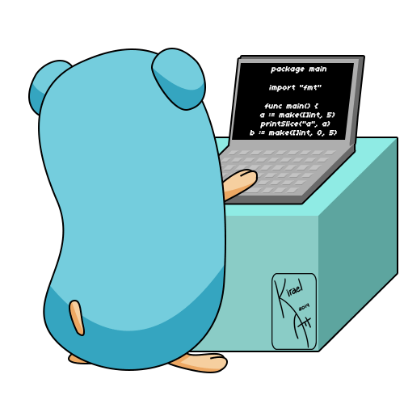
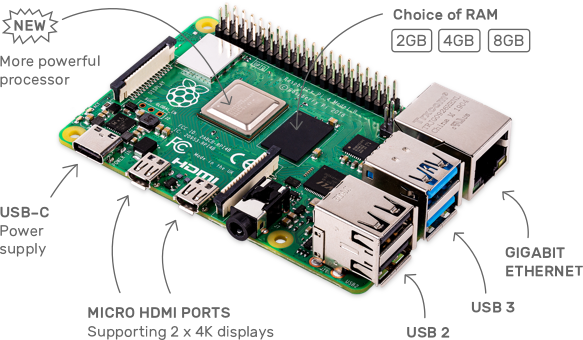
...It's small, but we want Tiny.
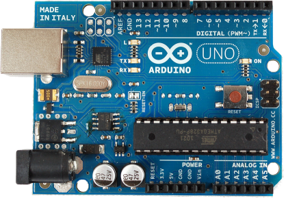 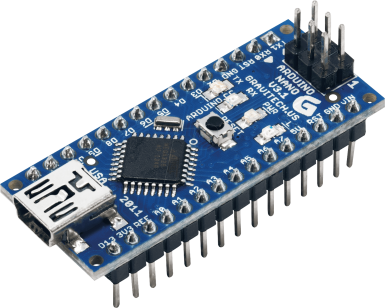
Read the History of Arduino
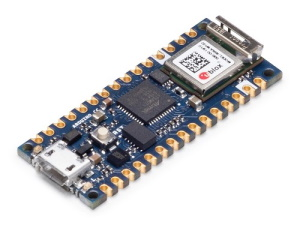 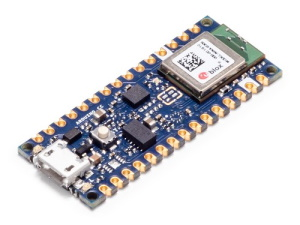 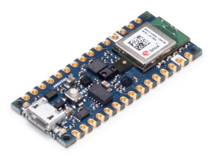
Newest, most powerful Arduino for Modern IoT makers.
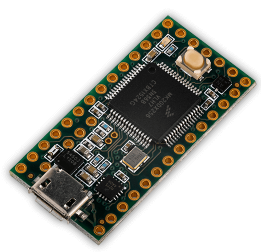
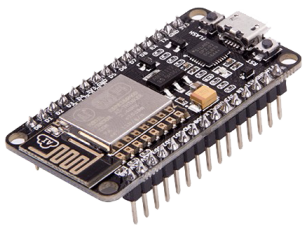 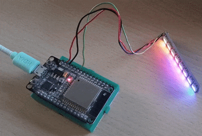
...Boring? But wait...
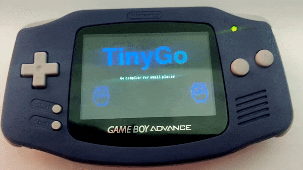
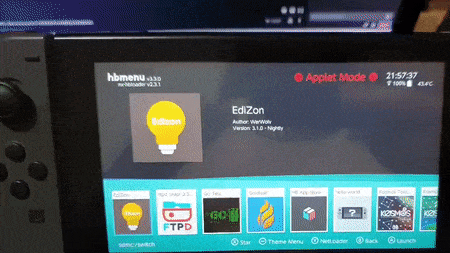
| Arduino Uno | Arduino Nano | 33 IoT | 33 BLE | 33 BLE Sense | Teensy v4 | ESP8266 | ESP32 | |
|---|---|---|---|---|---|---|---|---|
| Controller | ATmega32P | ATmega32P | SAMD21 | nRF52840 | nRF52840 | CortexM4 | L106 | XtensaLX6 |
| Type | 8-bit | 8-bit | 32-bit | 32-bit | 32-bit | 32-bit | 32-bit | 32-bit |
| Instructions | AVR | AVR | ARM | ARM | ARM | ARM | AT | ULP |
| Cores | 1 | 1 | 1 | 1 | 1 | 1 | 1 | 2 |
| Clock | 16Mhz | 16Mhz | 48Mhz | 64Mhz | 64Mhz | 600Mhz | 80Mhz | 160Mhz |
| EEPROM / SRAM (kb) | 1.1 | 1.0 | 32 | 256 | 256 | 1024 | 64 | 520 |
| Flash (kb) | 1.1 | 1.0 | 256 | 1024 | 1024 | 2048 | 4096 | 4096 |
Every tiny bit counts!
Go was designed for speed, not size.
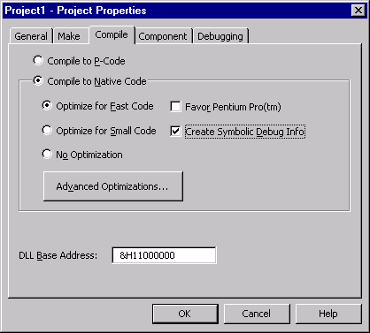
We need something optimised for size.
Created by Ayke van Laëthem!
It's an LLVM based Compiler
Supports a subset of Go language & data types
And a smaller set of standard packages
To make lean binaries to fit into tiny devices
And binaries for Linux, WASM & one-day Windows!
Let's find out...
package main
func main() {
println("Hello Voyager!")
}
$ make build-tinygo-comparison
1.1M build/hello-voyager_golang 21K build/hello-voyager_tinygo
TinyGo relies on the existing Go toolchain
After the Go SSA phase, it has a go at trimming
Prunes & optimises for target architecture
$ scoop install tinygo
$ brew tap tinygo-org/tools $ brew install tinygo
$ wget https://github.com/tinygo-org/tinygo/releases/download/v0.15.0/tinygo_0.15.0_amd64.deb $ sudo dpkg -i tinygo_0.15.0_amd64.deb
avr-dude$ scoop install avr-dude
$ brew install avrdude
$ sudo apt-get install gcc-avr avr-libc avrdude
$ choco install make
There's a joke in there somewhere...
First how the examples are structured:
├── /_build ├── /blink-bling │ └── main.go ├── /blink-ello │ └── main.go ├── /distance-sensor │ └── main.go ├── /go-compare │ └── main.go ├── /temp-sensor | └── main.go ├── Makefile ├── go.mod ├── go.sum └── platformio.ini
Let's make them work.
All examples have a make target.
$ make build-arduino-blink-ello $ make flash-arduino-blink-ello
Another target to clean our build artefacts.
$ make clean
Easy to present, easy to try later.
Our Target board is Arduino based.
Widely used, based on the AVR Instruction set
That's why we installed avr-dude earlier.
Let's look at Arduino Uno support.
Let's make something blink - blink-ello.
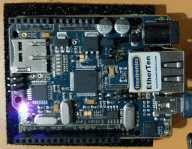
$ make build-arduino-blink-ello $ make flash-arduino-blink-ello
This is the Hardware Abstraction Layer in TinyGo
Defines all our board hardware - pins, buses, sensors
Let's look at Arduino Machine specifications.
Let's make something blink - blink-bling.
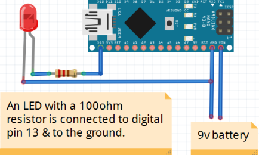
$ make flash-arduino-blink-bling
...are a big thing!
We specified a scheduler when flashing
$ tinygo flash -target arduino -scheduler coroutines ...
Which does the hard work of concurrency
Well supported on ARCM, still improving on AVR.
Opens up a whole host of new ideas.
Let's use the BME280 sensor - temp-sensor.
$ make flash-arduino-temp-sensor
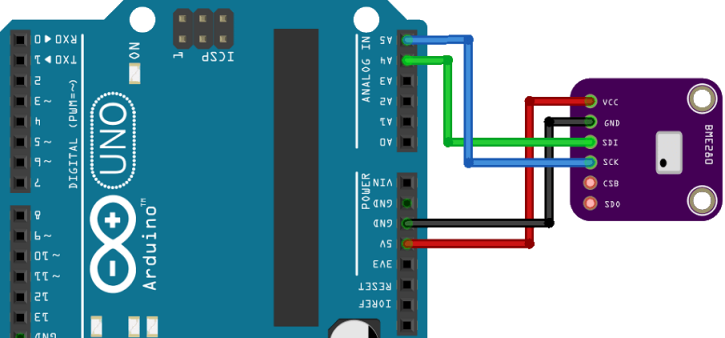
Gives us Temperature, Humidity & Altitude.
Drivers are a go module.
$ go get tinygo.org/x/drivers
There's a host of common devices supported already.
Sensors, LEDs/Smart Displays, RTCs, GPS.
Take a look at Supported Hardware Devices(53).
There's still a few things to implement in TinyGo.
It's a good way to learn Go
github.com/thushan/talk-tinygo-adventures
Thanks! Questions?